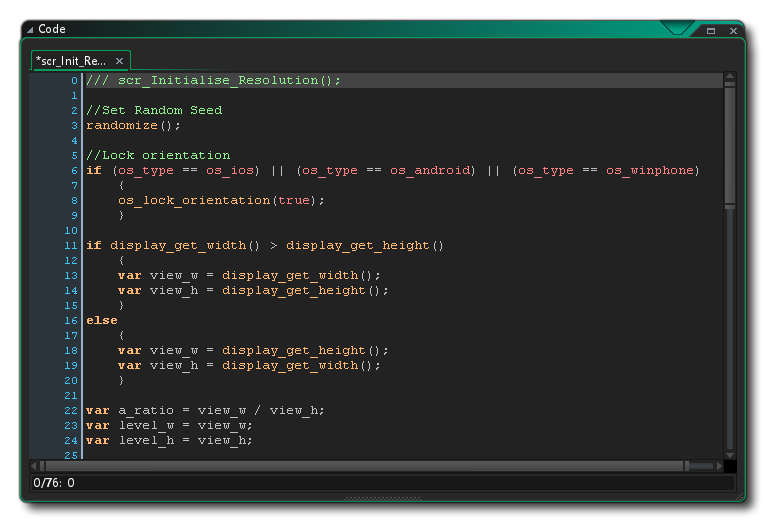

Un bloc de code consiste en un ensemble d'instructions, appelées instructions, qui sont ensuite interprétées par GameMaker Studio 2 et utilisées pour que quelque chose se passe dans votre jeu. Ce «quelque chose» peut être aussi simple que d'ajouter 2 et 2 pour obtenir 4, ou aussi complexe que de faire fuir un ennemi lorsque sa santé devient inférieure à une certaine valeur. La structure réelle du programme peut varier considérablement, en fonction des fonctions qu'il utilise, mais par rapport aux bases, il ressemble à ceci:
<statement>;
<statement>;
...
Les déclarations doivent être séparées par un ';' symbole pour éviter les erreurs avec les déclarations de variables et pour garder votre code propre et bien rangé, et peut se composer de déclarations de variables, d'expressions et d'appels à des fonctions ou des scripts spécifiques. Voici une représentation plus visuelle de la façon dont un bloc de code peut regarder, cette fois créé comme un script dans le GameMaker Studio 2 Script Editor: 
Il existe différents types d'énoncés et de fonctions, qui sont longuement discutés dans les sections suivantes du manuel.